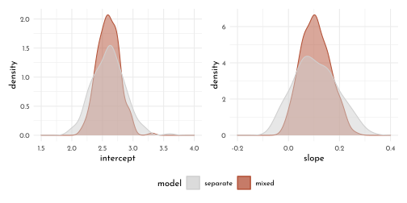
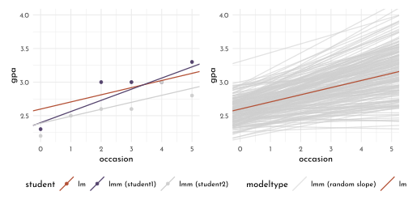
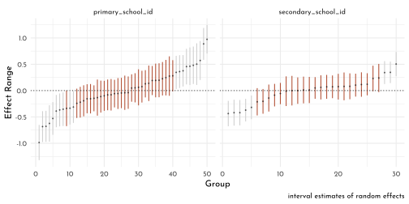

7 Mixed Models with R
load("data/gpa.RData")
gpa <- gpa %>% as_tibble()7.1 Standard regregression model
\[ gpa = b_{intercept} + b_{occ} \times occasion + \epsilon \]
Coefficients \(b\) for intercept and effect of time.
The error \(\epsilon\) is assumed to be normally distributed with \(\mu = 0\) and some standard deviation \(\sigma\).
\[ \epsilon \sim \mathscr{N}(0, \sigma) \]
alternate notation, with emphasis on the data generating process:
\[ gpa ~ \sim \mathscr{N}(\mu, \sigma)\\ \mu = b_{intercept} + b_{occ} \times occasion \]
7.2 mixed nodel
7.2.1 student specific effect (initial depiction)
\[ gpa = b_{intercept} + b_{occ} \times occasion + ( \textit{effect}_{student} + \epsilon )\\ \textit{effect}_{student} \sim \mathscr{N}(0, \tau) \]
focusing on the coefficients (rather than on sources of error):
\[ gpa = ( b_{intercept} + \textit{effect}_{student} ) + b_{occ} \times occasion + \epsilon \]
or (shorter)
\[ gpa = b_{int\_student} + b_{occ} \times occasion + \epsilon \]
\(\rightarrow\) this means student specific intercepts…
\[ b_{int\_student} \sim \mathscr{N}(b_{intercept}, \tau) \]
…that are normally distributed with the mean of the overall intercept (random intercepts model)
7.2.2 as multi-level model
two-part regression model (one at observation level, one at student level) (this is the same as above, just needs ‘plugging in’)
\[ gpa = b_{int\_student} + b_{occ} \times occasion + \epsilon\\ b_{int\_student} = b_{intercept} + \textit{effect}_{student} \]
! There is no student-specific effect for \(occasion\) (which is termed fixed effect), and there is no random component
gpa_lm <- lm(gpa ~ occasion, data = gpa)
gpa %>%
ggplot(aes(x = year - 1 + as.numeric(semester)/2, y = gpa, group = student)) +
geom_line(alpha = .2) +
geom_abline(slope = gpa_lm$coefficients[[2]],
intercept = gpa_lm$coefficients[[1]],
color = clr2, size = 1) +
labs(x = "semester") +
coord_cartesian(ylim = c(1,4), expand = 0)
pander::pander(summary(gpa_lm), round = 3)| Estimate | Std. Error | t value | Pr(>|t|) | |
|---|---|---|---|---|
| (Intercept) | 2.599 | 0.018 | 145.7 | 0 |
| occasion | 0.106 | 0.006 | 18.04 | 0 |
| Observations | Residual Std. Error | \(R^2\) | Adjusted \(R^2\) |
|---|---|---|---|
| 1200 | 0.3487 | 0.2136 | 0.2129 |
Student effect not taken into account.
7.2.3 Mixed Model
gpa_mixed <- lmer(gpa ~ occasion + (1 | student), data = gpa)(Test automatic equation creation)
library(equatiomatic)
# Give the results to extract_eq
extract_eq(gpa_mixed,)\[ \begin{aligned} \operatorname{gpa}_{i} &\sim N \left(\alpha_{j[i]} + \beta_{1}(\operatorname{occasion}), \sigma^2 \right) \\ \alpha_{j} &\sim N \left(\mu_{\alpha_{j}}, \sigma^2_{\alpha_{j}} \right) \text{, for student j = 1,} \dots \text{,J} \end{aligned} \]
| term | value | se | t | p_value | lower_2.5 | upper_97.5 |
|---|---|---|---|---|---|---|
| Intercept | 2.599 | 0.022 | 119.8 | 0 | 2.557 | 2.642 |
| occasion | 0.106 | 0.004 | 26.1 | 0 | 0.098 | 0.114 |
| group | effect | variance | sd | var_prop |
|---|---|---|---|---|
| student | Intercept | 0.064 | 0.252 | 0.523 |
| Residual | 0.058 | 0.241 | 0.477 |
Coefficients (fixed effects) for time and intercept are the same as lm()
Getting confidence intervals from a mixed model (since \(p\) values are not given (== 0 ?))
confint(gpa_mixed)#> 2.5 % 97.5 %
#> .sig01 0.22517423 0.2824604
#> .sigma 0.23071113 0.2518510
#> (Intercept) 2.55665145 2.6417771
#> occasion 0.09832589 0.1143027mm_cinf <- mixedup::extract_vc(gpa_mixed)
mm_cinf %>% pander::pander()| group | effect | variance | sd | sd_2.5 | |
|---|---|---|---|---|---|
| sd_(Intercept)|student | student | Intercept | 0.064 | 0.252 | 0.225 |
| sigma | Residual | 0.058 | 0.241 | 0.231 |
| sd_97.5 | var_prop | |
|---|---|---|
| sd_(Intercept)|student | 0.282 | 0.523 |
| sigma | 0.252 | 0.477 |
student effect \(\tau\) = 0.252 / 0.064 (sd / var)
Percentage of student variation as share of the total variation (intraclass correlation): 0.064 / 0.122 = 0.5245902
7.2.4 Estimation of random effects
Random effect
mixedup::extract_random_effects(gpa_mixed) %>% head(5) %>% knitr::kable()| group_var | effect | group | value | se | lower_2.5 | upper_97.5 |
|---|---|---|---|---|---|---|
| student | Intercept | 1 | -0.071 | 0.092 | -0.251 | 0.109 |
| student | Intercept | 2 | -0.216 | 0.092 | -0.395 | -0.036 |
| student | Intercept | 3 | 0.088 | 0.092 | -0.091 | 0.268 |
| student | Intercept | 4 | -0.187 | 0.092 | -0.366 | -0.007 |
| student | Intercept | 5 | 0.030 | 0.092 | -0.149 | 0.210 |
Random intercept (intercept + random effect)
mm_coefs <- mixedup::extract_coef(gpa_mixed)
mm_coefs %>% head(5) %>% knitr::kable()| group_var | effect | group | value | se | lower_2.5 | upper_97.5 |
|---|---|---|---|---|---|---|
| student | Intercept | 1 | 2.528 | 0.095 | 2.343 | 2.713 |
| student | Intercept | 2 | 2.383 | 0.095 | 2.198 | 2.568 |
| student | Intercept | 3 | 2.687 | 0.095 | 2.502 | 2.872 |
| student | Intercept | 4 | 2.412 | 0.095 | 2.227 | 2.597 |
| student | Intercept | 5 | 2.629 | 0.095 | 2.444 | 2.814 |
library(merTools)
mm_intervals <- predictInterval(gpa_mixed) %>% as_tibble()
mm_mean_sd <- REsim(gpa_mixed) %>% as_tibble()
sd_level <- .95
mm_mean_sd %>%
mutate(sd_leveled = sd * qnorm(1 - ((1 - sd_level)/2)),
sig = (median + sd_leveled) >= 0 & (median - sd_leveled) <= 0) %>%
arrange(median) %>%
mutate(rank = row_number()) %>%
arrange(groupID) %>%
ggplot(aes(x = rank)) +
geom_segment(aes(xend = rank, y = median - sd_leveled, yend = median + sd_leveled, color = sig)) +
geom_point(aes(y = median), size = .3, alpha = .5) +
geom_hline(yintercept = 0, size = .4, linetype = 3) +
scale_color_manual(values = c(`TRUE` = clr2, `FALSE` = clr0d), guide = "none") +
labs(x = "Student", y = "Coefficient", caption = "interval estimates of random effects")
7.2.5 Prediction
gpa_predictions <- tibble(lm = predict(gpa_lm),
lmm_no_random_effects = predict(gpa_mixed, re.form = NA),
lmm_with_random_effects = predict(gpa_mixed)) %>%
bind_cols(gpa, .)
gpa_predictions %>%
ggplot(aes(x = lm)) +
geom_point(aes(y = lmm_with_random_effects, color = "with_re")) +
geom_point(aes(y = lmm_no_random_effects, color = "no_re")) +
scale_color_manual(values = c(no_re = clr2, with_re = clr0d)) 
student_select <- 1:2
gpa_predictions %>%
filter(student %in% student_select) %>%
ggplot(aes(x = occasion)) +
geom_point(aes(y = gpa, color = student))+
geom_abline(data = tibble(slope = c(gpa_lm$coefficients[[2]], mm_fixed$value[c(2,2)]),
intercept = c(gpa_lm$coefficients[[1]], mm_coefs$value[as.numeric(as.character(mm_coefs$group)) %in% student_select]),
model = c("lm", as.character(mm_coefs$group[as.numeric(as.character(mm_coefs$group)) %in% student_select]))),
aes(slope = slope, intercept = intercept, color = model), size = .6) +
scale_color_manual(values = c(lm = clr2, `1` = clr1, `2` = clr0d),
labels = c( "lm", "lmm (student1)", "lmm (student2)"))
7.2.6 Cluster Level Covariates
If a cluster level covariate is added (eg. sex), \(b_{int\_student}\) turns into:
\[ b_{int\_student} = b_{intercept} + b_{sex} \times \textit{sex} + \textit{effect}_{student} \]
plugging this into the model will result in
\[ gpa = b_{intercept} + b_{occ} \times \textit{occasion} + b_{sex} \times \textit{sex} + ( \textit{effect}_{student} + \epsilon) \]
7.3 Add random slope
gpa_mixed2 <- lmer(gpa ~ occasion + (1 + occasion | student), data = gpa)
mixedup::extract_fixed_effects(gpa_mixed2) %>% knitr::kable()| term | value | se | t | p_value | lower_2.5 | upper_97.5 |
|---|---|---|---|---|---|---|
| Intercept | 2.599 | 0.018 | 141.592 | 0 | 2.563 | 2.635 |
| occasion | 0.106 | 0.006 | 18.066 | 0 | 0.095 | 0.118 |
mixedup::extract_vc(gpa_mixed2, ci_level = 0) %>% knitr::kable()| group | effect | variance | sd | var_prop |
|---|---|---|---|---|
| student | Intercept | 0.045 | 0.213 | 0.491 |
| student | occasion | 0.005 | 0.067 | 0.049 |
| Residual | 0.042 | 0.206 | 0.460 |
gpa_mixed2_rc <- mixedup::extract_random_coefs(gpa_mixed2)correlation of the intercepts and slopes (negative, so students with a low starting score tend to increase a little more)
VarCorr(gpa_mixed2) %>% as_tibble() %>% knitr::kable() | grp | var1 | var2 | vcov | sdcor |
|---|---|---|---|---|
| student | (Intercept) | NA | 0.0451934 | 0.2125875 |
| student | occasion | NA | 0.0045039 | 0.0671114 |
| student | (Intercept) | occasion | -0.0014016 | -0.0982391 |
| Residual | NA | NA | 0.0423879 | 0.2058832 |
gpa_lm_separate <- gpa %>%
group_by(student) %>%
nest() %>%
mutate(mod = map(data,function(data){lm(gpa ~ occasion, data = data)})) %>%
bind_cols(., summarise_model(.))
p_intercepts <- ggplot() +
geom_density(data = gpa_mixed2_rc %>% filter(effect == "Intercept"),
aes(x = value, color = "mixed", fill = after_scale(clr_alpha(color)))) +
geom_density(data = gpa_lm_separate,
aes(x = intercept, color = "separate", fill = after_scale(clr_alpha(color)))) +
labs(x = "intercept") +
xlim(1.5, 4)
p_slopes <- ggplot() +
geom_density(data = gpa_mixed2_rc %>% filter(effect == "occasion"),
aes(x = value, color = "mixed", fill = after_scale(clr_alpha(color)))) +
geom_density(data = gpa_lm_separate,
aes(x = slope, color = "separate", fill = after_scale(clr_alpha(color)))) +
labs(x = "slope") +
xlim(-.2, .4)
p_intercepts + p_slopes +
plot_layout(guides = "collect") &
scale_color_manual("model", values = c(separate = clr0d, mixed = clr2)) &
theme(legend.position = "bottom")
\(\rightarrow\) mixed model intercepts and slopes are less extreme
In both cases the mixed model shrinks what would have been the by-group estimate, which would otherwise overfit in this scenario. This regularizing effect is yet another bonus when using mixed models.
gpa_predictions <- tibble(lmm_with_random_slope = predict(gpa_mixed2)) %>%
bind_cols(gpa_predictions, .)
gpa_mixed2_rc_wide <- gpa_mixed2_rc %>%
dplyr::select(group_var, group, effect, value) %>%
pivot_wider(names_from = effect, values_from = value)
student_select <- 1:2
p_two_students <- gpa_predictions %>%
filter(student %in% student_select) %>%
ggplot(aes(x = occasion)) +
geom_point(aes(y = gpa, color = student))+
geom_abline(data = tibble(slope = c(gpa_lm$coefficients[[2]],
gpa_mixed2_rc_wide$occasion[as.numeric(as.character(gpa_mixed2_rc_wide$group)) %in% student_select]),
intercept = c(gpa_lm$coefficients[[1]],
gpa_mixed2_rc_wide$Intercept[as.numeric(as.character(gpa_mixed2_rc_wide$group)) %in% student_select]),
model = c("lm", as.character(gpa_mixed2_rc_wide$group[as.numeric(as.character(gpa_mixed2_rc_wide$group)) %in% student_select]))),
aes(slope = slope, intercept = intercept, color = model), size = .6) +
scale_color_manual(values = c(lm = clr2, `1` = clr1, `2` = clr0d),
labels = c( "lm", "lmm (student1)", "lmm (student2)"))
p_all_mod <- ggplot(data = gpa_predictions, aes(x = occasion, y = gpa)) +
geom_abline(data = tibble(slope = c(gpa_mixed2_rc_wide$occasion, gpa_lm$coefficients[[2]]),
intercept = c(gpa_mixed2_rc_wide$Intercept, gpa_lm$coefficients[[1]]),
modeltype = c(rep("lmm (random slope)", length(gpa_mixed2_rc_wide$Intercept)), "lm")),
aes(slope = slope, intercept = intercept, color = modeltype), size = .6) +
scale_color_manual(values = c(`lmm (random slope)` = clr_alpha(clr0d ,.6), lm = clr2))
p_two_students + p_all_mod +
plot_layout(guides = "collect") &
xlim(0,5) & ylim(2.2, 4) &
theme(legend.position = "bottom")
7.4 Cross Classified models
Setups where data are grouped by several factors but these are not nested (all participants get to see all images). These are crossed random effects.
load("data/pupils.RData")
pupils %>% head() %>% knitr::kable()| PUPIL | primary_school_id | secondary_school_id | achievement | sex | ses | primary_denominational | secondary_denominational |
|---|---|---|---|---|---|---|---|
| 1 | 1 | 2 | 6.6 | female | highest | no | no |
| 2 | 1 | 1 | 5.7 | male | lowest | no | yes |
| 3 | 1 | 17 | 4.5 | male | 2 | no | no |
| 4 | 1 | 3 | 4.4 | male | 2 | no | no |
| 5 | 1 | 4 | 5.8 | male | 3 | no | yes |
| 6 | 1 | 4 | 5.0 | female | 4 | no | yes |
pupils_crossed <- lmer(
achievement ~ sex + ses +
( 1 | primary_school_id ) + ( 1 | secondary_school_id ),
data = pupils
)
mixedup::extract_fixed_effects(pupils_crossed) %>% knitr::kable()| term | value | se | t | p_value | lower_2.5 | upper_97.5 |
|---|---|---|---|---|---|---|
| Intercept | 5.924 | 0.123 | 48.303 | 0.000 | 5.684 | 6.164 |
| sexfemale | 0.261 | 0.046 | 5.716 | 0.000 | 0.171 | 0.350 |
| ses2 | 0.132 | 0.118 | 1.122 | 0.262 | -0.098 | 0.362 |
| ses3 | 0.098 | 0.110 | 0.890 | 0.373 | -0.118 | 0.314 |
| ses4 | 0.298 | 0.105 | 2.851 | 0.004 | 0.093 | 0.503 |
| ses5 | 0.354 | 0.101 | 3.514 | 0.000 | 0.156 | 0.551 |
| seshighest | 0.616 | 0.110 | 5.602 | 0.000 | 0.401 | 0.832 |
mixedup::extract_vc(pupils_crossed, ci_level = 0) %>% knitr::kable()| group | effect | variance | sd | var_prop |
|---|---|---|---|---|
| primary_school_id | Intercept | 0.173 | 0.416 | 0.243 |
| secondary_school_id | Intercept | 0.066 | 0.257 | 0.093 |
| Residual | 0.473 | 0.688 | 0.664 |
pupils_varicance_components_random_effects <- REsim(pupils_crossed) %>% as_tibble()
pupils_varicance_components_random_effects %>%
mutate(sd_leveled = sd * qnorm(1 - ((1 - sd_level)/2)),
sig = (median + sd_leveled) >= 0 & (median - sd_leveled) <= 0) %>%
group_by(groupFctr) %>%
arrange(groupFctr, median) %>%
mutate(rank = row_number()) %>%
arrange(groupFctr, groupID) %>%
ungroup() %>%
ggplot(aes(x = rank)) +
geom_segment(aes(xend = rank, y = median - sd_leveled, yend = median + sd_leveled, color = sig)) +
geom_point(aes(y = median), size = .3, alpha = .5) +
geom_hline(yintercept = 0, size = .4, linetype = 3) +
facet_wrap(groupFctr ~ ., scales = "free_x") +
scale_color_manual(values = c(`TRUE` = clr2, `FALSE` = clr0d), guide = "none") +
labs(x = "Group", y = "Effect Range", caption = "interval estimates of random effects")
Note that we have the usual extensions here if desired. As an example, we could also do random slopes for student level characteristics.
7.5 Hierachical structure
These are setups, where different grouping factors are nested within each other (eg. cities, counties, states).
load("data/nurses.RData")
nurses %>% head() %>% knitr::kable()| hospital | ward | wardid | nurse | age | sex | experience | stress | wardtype | hospsize | treatment |
|---|---|---|---|---|---|---|---|---|---|---|
| 1 | 1 | 11 | 1 | 36 | Male | 11 | 7 | general care | large | Training |
| 1 | 1 | 11 | 2 | 45 | Male | 20 | 7 | general care | large | Training |
| 1 | 1 | 11 | 3 | 32 | Male | 7 | 7 | general care | large | Training |
| 1 | 1 | 11 | 4 | 57 | Female | 25 | 6 | general care | large | Training |
| 1 | 1 | 11 | 5 | 46 | Female | 22 | 6 | general care | large | Training |
| 1 | 1 | 11 | 6 | 60 | Female | 22 | 6 | general care | large | Training |
nurses_hierach <- lmer(
stress ~ age + sex + experience + treatment + wardtype + hospsize +
( 1 | hospital) + ( 1 | hospital:ward), # together same as ( 1 | hospital / ward)
data = nurses
)
mixedup::extract_fixed_effects(nurses_hierach) %>% knitr::kable()| term | value | se | t | p_value | lower_2.5 | upper_97.5 |
|---|---|---|---|---|---|---|
| Intercept | 5.380 | 0.185 | 29.128 | 0.000 | 5.018 | 5.742 |
| age | 0.022 | 0.002 | 10.053 | 0.000 | 0.018 | 0.026 |
| sexFemale | -0.453 | 0.035 | -12.952 | 0.000 | -0.522 | -0.385 |
| experience | -0.062 | 0.004 | -13.776 | 0.000 | -0.070 | -0.053 |
| treatmentTraining | -0.700 | 0.120 | -5.843 | 0.000 | -0.935 | -0.465 |
| wardtypespecial care | 0.051 | 0.120 | 0.424 | 0.671 | -0.184 | 0.286 |
| hospsizemedium | 0.489 | 0.202 | 2.428 | 0.015 | 0.094 | 0.884 |
| hospsizelarge | 0.902 | 0.275 | 3.280 | 0.001 | 0.363 | 1.440 |
mixedup::extract_vc(nurses_hierach, ci_level = 0) %>% knitr::kable()| group | effect | variance | sd | var_prop |
|---|---|---|---|---|
| hospital:ward | Intercept | 0.337 | 0.580 | 0.500 |
| hospital | Intercept | 0.119 | 0.345 | 0.177 |
| Residual | 0.217 | 0.466 | 0.323 |
nurses_varicance_components_random_effects <- REsim(nurses_hierach) %>% as_tibble()
nurses_varicance_components_random_effects %>%
mutate(sd_leveled = sd * qnorm(1 - ((1 - sd_level)/2)),
sig = (median + sd_leveled) >= 0 & (median - sd_leveled) <= 0) %>%
group_by(groupFctr) %>%
arrange(groupFctr, median) %>%
mutate(rank = row_number()) %>%
arrange(groupFctr, groupID) %>%
ungroup() %>%
ggplot(aes(x = rank)) +
geom_segment(aes(xend = rank, y = median - sd_leveled, yend = median + sd_leveled, color = sig)) +
geom_point(aes(y = median), size = .3, alpha = .5) +
geom_hline(yintercept = 0, size = .4, linetype = 3) +
facet_wrap(groupFctr ~ ., scales = "free_x") +
scale_color_manual(values = c(`TRUE` = clr2, `FALSE` = clr0d), guide = "none") +
ylim(-2,2) +
labs(x = "Group", y = "Effect Range", caption = "interval estimates of random effects")
7.5.1 Crossed vs. nested
nurses_hierach2 <- lmer(
stress ~ age + sex + experience + treatment + wardtype + hospsize +
( 1 | hospital ) + ( 1 | hospital:wardid ), # needs to be wardid now because ward is duplicated over hospitals (not unique)
data = nurses
)
nurses_nested <- lmer(
stress ~ age + sex + experience + treatment + wardtype + hospsize +
( 1 | hospital ) + ( 1 | wardid ),
data = nurses
)Nested:
mixedup::extract_fixed_effects(nurses_hierach2) %>% knitr::kable()| term | value | se | t | p_value | lower_2.5 | upper_97.5 |
|---|---|---|---|---|---|---|
| Intercept | 5.380 | 0.185 | 29.128 | 0.000 | 5.018 | 5.742 |
| age | 0.022 | 0.002 | 10.053 | 0.000 | 0.018 | 0.026 |
| sexFemale | -0.453 | 0.035 | -12.952 | 0.000 | -0.522 | -0.385 |
| experience | -0.062 | 0.004 | -13.776 | 0.000 | -0.070 | -0.053 |
| treatmentTraining | -0.700 | 0.120 | -5.843 | 0.000 | -0.935 | -0.465 |
| wardtypespecial care | 0.051 | 0.120 | 0.424 | 0.671 | -0.184 | 0.286 |
| hospsizemedium | 0.489 | 0.202 | 2.428 | 0.015 | 0.094 | 0.884 |
| hospsizelarge | 0.902 | 0.275 | 3.280 | 0.001 | 0.363 | 1.440 |
mixedup::extract_vc(nurses_hierach2, ci_level = 0) %>% knitr::kable()| group | effect | variance | sd | var_prop |
|---|---|---|---|---|
| hospital:wardid | Intercept | 0.337 | 0.580 | 0.500 |
| hospital | Intercept | 0.119 | 0.345 | 0.177 |
| Residual | 0.217 | 0.466 | 0.323 |
Crossed:
mixedup::extract_fixed_effects(nurses_nested) %>% knitr::kable()| term | value | se | t | p_value | lower_2.5 | upper_97.5 |
|---|---|---|---|---|---|---|
| Intercept | 5.380 | 0.185 | 29.128 | 0.000 | 5.018 | 5.742 |
| age | 0.022 | 0.002 | 10.053 | 0.000 | 0.018 | 0.026 |
| sexFemale | -0.453 | 0.035 | -12.952 | 0.000 | -0.522 | -0.385 |
| experience | -0.062 | 0.004 | -13.776 | 0.000 | -0.070 | -0.053 |
| treatmentTraining | -0.700 | 0.120 | -5.843 | 0.000 | -0.935 | -0.465 |
| wardtypespecial care | 0.051 | 0.120 | 0.424 | 0.671 | -0.184 | 0.286 |
| hospsizemedium | 0.489 | 0.202 | 2.428 | 0.015 | 0.094 | 0.884 |
| hospsizelarge | 0.902 | 0.275 | 3.280 | 0.001 | 0.363 | 1.440 |
mixedup::extract_vc(nurses_nested, ci_level = 0) %>% knitr::kable()| group | effect | variance | sd | var_prop |
|---|---|---|---|---|
| wardid | Intercept | 0.337 | 0.580 | 0.500 |
| hospital | Intercept | 0.119 | 0.345 | 0.177 |
| Residual | 0.217 | 0.466 | 0.323 |
7.6 Residual Structure
rescov <- function(model, data) {
var.d <- crossprod(getME(model,"Lambdat"))
Zt <- getME(model,"Zt")
vr <- sigma(model)^2
var.b <- vr*(t(Zt) %*% var.d %*% Zt)
sI <- vr * Diagonal(nrow(data))
var.y <- var.b + sI
var.y %>%
as.matrix() %>%
as_tibble() %>%
mutate(row = row_number()) %>%
pivot_longer(cols = -row, names_to = "column")
}
rescov(gpa_mixed, gpa) %>%
mutate(x = as.numeric(column),
y = as.numeric(row)) %>%
filter(between(x,0,30),
between(y,0,30)) %>%
ggplot(aes(x = x,
y = y,
fill = value)) +
geom_tile(aes(color = after_scale(clr_darken(fill))), size = .3, width = .9, height = .9) +
scale_fill_gradientn(colours = c(clr0, clr_lighten(clr1), clr_lighten(clr2))) +
scale_y_reverse() +
coord_equal()
covariance matrix for a cluster (compound symmetry):
\[ \Sigma = \left[ \begin{array}{ccc} \color{#B35136}{\sigma^2 + \tau^2} & \tau^2 & \tau^2 & \tau^2 & \tau^2 & \tau^2 \\ \tau^2 & \color{#B35136}{\sigma^2 + \tau^2} & \tau^2 & \tau^2 & \tau^2 & \tau^2 \\ \tau^2 & \tau^2 & \color{#B35136}{\sigma^2 + \tau^2} & \tau^2 & \tau^2 & \tau^2 \\ \tau^2 & \tau^2 & \tau^2 & \color{#B35136}{\sigma^2 + \tau^2} & \tau^2 & \tau^2\\ \tau^2 & \tau^2 & \tau^2 & \tau^2 & \color{#B35136}{\sigma^2 + \tau^2} & \tau^2 \\ \tau^2 & \tau^2 & \tau^2 & \tau^2 & \tau^2 & \color{#B35136}{\sigma^2 + \tau^2} \\ \end{array}\right] \]
Types of covariance structures:
in a standard linear regression model, we have constant variance and no covariance:
\[ \Sigma = \left[ \begin{array}{ccc} \sigma^2 & 0 & 0 \\ 0 & \sigma^2 & 0 \\ 0 & 0 & \sigma^2 \\ \end{array}\right] \]
next, relax the assumption of equal variances, and estimate each separately. In this case of heterogeneous variances, we might see more or less variance over time, for example.
\[ \Sigma = \left[ \begin{array}{ccc} \sigma_1^2 & 0 & 0 \\ 0 & \sigma_2^2 & 0 \\ 0 & 0 & \sigma_3^2 \\ \end{array}\right] \]
we actually want to get at the underlying covariance/correlation. I’ll switch to the correlation representation, but you can still think of the variances as constant or separately estimated. So now we have something like this, where \(\rho\) represents the residual correlation among observations.
\[ \Sigma = \sigma^2 \left[ \begin{array}{ccc} 1 & \rho_1 & \rho_2 \\ \rho_1 & 1 & \rho_3 \\ \rho_2 & \rho_3 & 1 \\ \end{array}\right] \]
\(\rightarrow\) unstructured / symmetric correlation structure (compound symmetry)
Autocorrelation (lag of order one for residuals):
\[ \Sigma = \sigma^2 \left[ \begin{array}{cccc} 1 & \rho & \rho^2 & \rho^3 \\ \rho & 1 & \rho & \rho^2 \\ \rho^2 & \rho & 1 & \rho \\ \rho^3 & \rho^2 & \rho & 1 \\ \end{array}\right] \]
7.6.1 Heterogeneous variance
library(nlme)
gpa_hetero_res <- lme(
gpa ~ occasion,
data = gpa,
random = ~ 1 | student,
weights = varIdent(form = ~ 1 | occasion)
)
mixedup::extract_fixed_effects(gpa_hetero_res) %>% knitr::kable()| term | value | se | z | p_value | lower_2.5 | upper_97.5 |
|---|---|---|---|---|---|---|
| Intercept | 2.599 | 0.026 | 99.002 | 0 | 2.547 | 2.650 |
| occasion | 0.106 | 0.004 | 26.317 | 0 | 0.098 | 0.114 |
mixedup::extract_vc(gpa_hetero_res, ci_level = 0) %>% knitr::kable()| group | effect | variance | sd | var_prop |
|---|---|---|---|---|
| student | Intercept | 0.094 | 0.306 | 0.404 |
| Residual | 0.138 | 0.372 | 0.596 |
alternative approach to heterogeneous variance models:
library(glmmTMB)
gpa_hetero_res2 <- glmmTMB(
gpa ~ occasion + ( 1 | student ) + diag( 0 + occas | student ),
data = gpa
)Comparing results of {nlme} and {glmmTMB}
tibble(relative_val = c(1, coef(gpa_hetero_res$modelStruct$varStruct, unconstrained = FALSE))) %>%
mutate(absolute_val = (relative_val * gpa_hetero_res$sigma) ^ 2,
`hetero_res (nlme)` = mixedup::extract_het_var(gpa_hetero_res, scale = 'var', digits = 5) %>%
unname() %>% as.vector() %>% t() %>% .[,1],
`hetero_res (glmmTMB)` = mixedup::extract_het_var(gpa_hetero_res2, scale = 'var', digits = 5) %>%
dplyr::select(-group) %>% unname() %>% as.vector() %>% t() %>% .[,1]) %>%
knitr::kable()| relative_val | absolute_val | hetero_res (nlme) | hetero_res (glmmTMB) |
|---|---|---|---|
| 1.0000000 | 0.1381504 | 0.13815 | 0.13790 |
| 0.8261186 | 0.0942837 | 0.09428 | 0.09415 |
| 0.6272415 | 0.0543528 | 0.05435 | 0.05430 |
| 0.4311126 | 0.0256764 | 0.02568 | 0.02568 |
| 0.3484013 | 0.0167692 | 0.01677 | 0.01677 |
| 0.4324628 | 0.0258374 | 0.02584 | 0.02580 |
7.6.2 Autocorrelation
gpa_autocorr <- lme(
gpa ~ occasion,
data = gpa,
random = ~ 1 | student,
correlation = corAR1(form = ~ occasion)
)
mixedup::extract_fixed_effects(gpa_autocorr) %>% knitr::kable()| term | value | se | z | p_value | lower_2.5 | upper_97.5 |
|---|---|---|---|---|---|---|
| Intercept | 2.597 | 0.023 | 113.146 | 0 | 2.552 | 2.642 |
| occasion | 0.107 | 0.005 | 20.297 | 0 | 0.097 | 0.118 |
mixedup::extract_vc(gpa_autocorr, ci_level = 0) %>% knitr::kable()| group | effect | variance | sd | var_prop |
|---|---|---|---|---|
| student | Intercept | 0.046 | 0.215 | 0.381 |
| Residual | 0.075 | 0.273 | 0.619 |
gpa_autocorr2 <- glmmTMB(
gpa ~ occasion + ar1( 0 + occas | student ) + ( 1 | student ),
# occas is cotegorical version of occasion
data = gpa
)
mixedup::extract_fixed_effects(gpa_autocorr2) %>% knitr::kable()| term | value | se | z | p_value | lower_2.5 | upper_97.5 |
|---|---|---|---|---|---|---|
| Intercept | 2.598 | 0.023 | 111.077 | 0 | 2.552 | 2.643 |
| occasion | 0.107 | 0.005 | 19.458 | 0 | 0.096 | 0.118 |
mixedup::extract_vc(gpa_autocorr2, ci_level = 0) %>% knitr::kable()| group | variance | sd | var_prop |
|---|---|---|---|
| student | 0.093 | 0.305 | 0.159 |
| student.1 | 0.000 | 0.000 | 0.000 |
| Residual | 0.028 | 0.167 | 0.048 |
7.7 Generalized Linear Mixed Models
load("data/speed_dating.RData")
sdating <- glmer(
decision ~ sex + samerace + attractive_sc + sincere_sc + intelligent_sc +
( 1 | iid),
data = speed_dating,
family = binomial
)
mixedup::extract_fixed_effects(sdating) %>% knitr::kable()| term | value | se | z | p_value | lower_2.5 | upper_97.5 |
|---|---|---|---|---|---|---|
| Intercept | -0.743 | 0.121 | -6.130 | 0.00 | -0.981 | -0.506 |
| sexMale | 0.156 | 0.164 | 0.954 | 0.34 | -0.165 | 0.478 |
| sameraceYes | 0.314 | 0.075 | 4.192 | 0.00 | 0.167 | 0.460 |
| attractive_sc | 0.502 | 0.015 | 33.559 | 0.00 | 0.472 | 0.531 |
| sincere_sc | 0.089 | 0.016 | 5.747 | 0.00 | 0.059 | 0.120 |
| intelligent_sc | 0.143 | 0.017 | 8.232 | 0.00 | 0.109 | 0.177 |
mixedup::extract_vc(sdating, ci_level = 0) %>% knitr::kable()| group | effect | variance | sd | var_prop |
|---|---|---|---|---|
| iid | Intercept | 2.708 | 1.645 | 1 |
7.8 Issues/ Considderations
- small number of clusters: problematic - similar to number of samples to compute variance / mean or similar (to get to the variance component we need enough groups). This also touches whether something should be a fixed or a random effect (random is always possible when the number of clusters is large enough)
- small number of observations within clusters: no problem, but might prevent random slopes (for
n == 1) - balanced design / missing data: not really a requirement, so as long as it is not extreme likely not an issue
7.8.1 Model comparison
Using AIC can help, but should not used to make the decision—reasoning about the implications of the used models should.
gpa_1 <- lmer(gpa ~ occasion + (1 + occasion | student), data = gpa)
gpa_2 <- lmer(gpa ~ occasion + sex + (1 + occasion | student), data = gpa)
gpa_3 <- lmer(gpa ~ occasion + (1 | student), data = gpa)
list(gpa_1 = gpa_1, gpa_2 = gpa_2, gpa_3 = gpa_3) %>%
map_df(function(mod) data.frame(AIC = AIC(mod)), .id = 'model') %>%
arrange(AIC) %>%
mutate(`Δ AIC` = AIC - min(AIC)) %>%
knitr::kable()| model | AIC | Δ AIC |
|---|---|---|
| gpa_2 | 269.7853 | 0.000000 |
| gpa_1 | 272.9566 | 3.171217 |
| gpa_3 | 416.8929 | 147.107536 |
7.9 Formula summary
| formula | meaning |
|---|---|
(1|group) |
random group intercept |
(x|group) = (1+x|group) |
random slope of x within group with correlated intercept |
(0+x|group) = (-1+x|group) |
random slope of x within group: no variation in intercept |
(1|group) + (0+x|group) |
uncorrelated random intercept and random slope within group |
(1|site/block) = (1|site)+(1|site:block) |
intercept varying among sites and among blocks within sites (nested random effects) |
site+(1|site:block) |
fixed effect of sites plus random variation in intercept among blocks within sites |
(x|site/block) = (x|site)+(x|site:block) = (1 + x|site)+(1+x|site:block) |
slope and intercept varying among sites and among blocks within sites |
(x1|site)+(x2|block) |
two different effects, varying at different levels |
x*site+(x|site:block) |
fixed effect variation of slope and intercept varying among sites and random variation of slope and intercept among blocks within sites |
(1|group1)+(1|group2) |
intercept varying among crossed random effects (e.g. site, year) |
| equation | formula |
|---|---|
| \(β_0 + β_{1}X_{i} + e_{si}\) | n/a (Not a mixed-effects model) |
| \((β_0 + b_{S,0s}) + β_{1}X_i + e_{si}\) | ∼ X + (1∣Subject) |
| \((β_0 + b_{S,0s}) + (β_{1} + b_{S,1s}) X_i + e_{si}\) | ~ X + (1 + X∣Subject) |
| \((β_0 + b_{S,0s} + b_{I,0i}) + (β_{1} + b_{S,1s}) X_i + e_{si}\) | ∼ X + (1 + X∣Subject) + (1∣Item) |
| As above, but \(S_{0s}\), \(S_{1s}\) independent | ∼ X + (1∣Subject) + (0 + X∣ Subject) + (1∣Item) |
| \((β_0 + b_{S,0s} + b_{I,0i}) + β_{1}X_i + e_{si}\) | ∼ X + (1∣Subject) + (1∣Item) |
| \((β_0 + b_{I,0i}) + (β_{1} + b_{S,1s})X_i + e_{si}\) | ∼ X + (0 + X∣Subject) + (1∣Item) |